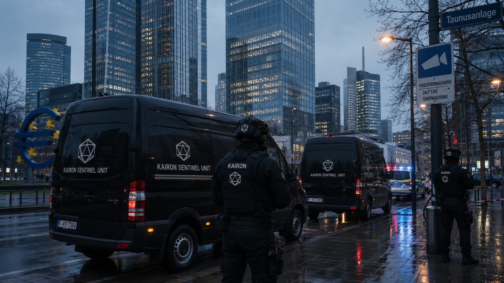

OP — 0033 / EASTERN EUROPE
Overview
Project Atlas was a fourteen-day executive protection and intelligence operation supporting a delegation of six principals during high-sensitivity bilateral trade negotiations in an undisclosed Eastern European location. The engagement represented one of Kairon's most complex close-protection deployments, combining physical protection with active counterintelligence operations.
The operating environment presented elevated physical and signals intelligence risks. The client required a provider with both close protection capabilities and active counterintelligence resources to identify hostile surveillance targeting the delegation.

Methodology
A pre-deployment advance team was inserted two weeks prior to the delegation's arrival to conduct venue surveys, route assessments, and local threat mapping. During the operation, a six-person Vanguard protection detail maintained continuous coverage of all principals.
Concurrently, the Cipher Division deployed a signals monitoring capability targeting known hostile collection frequencies, providing real-time intelligence on adversarial surveillance activity directed at the delegation.
Outcome
All principals safely extracted at the conclusion of negotiations without incident. Two hostile surveillance operations were identified during the engagement, and detailed attribution reports were delivered to the client's security directorate and relevant national intelligence partners.
The negotiations concluded successfully. The client subsequently retained Kairon under a rolling framework agreement for all future international executive protection requirements.